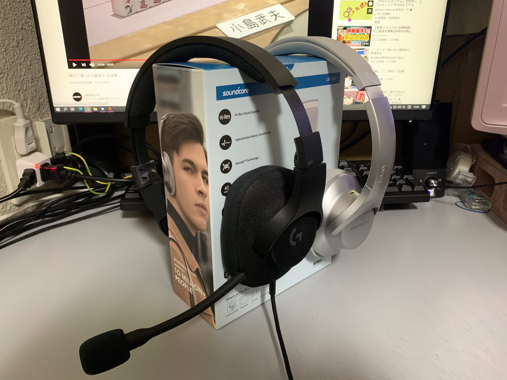
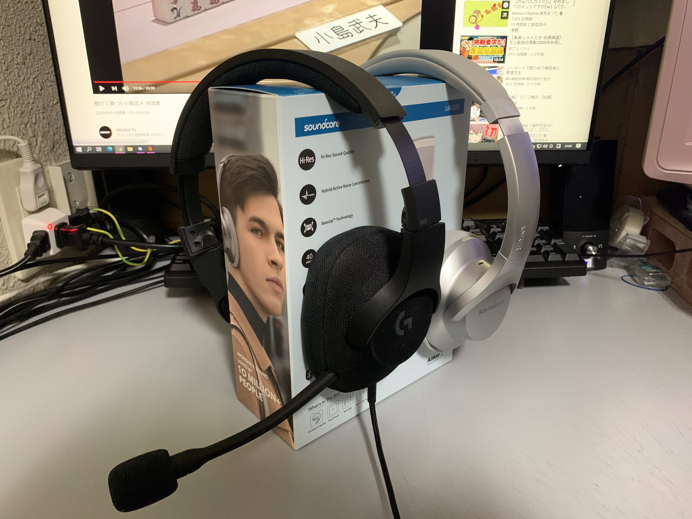

趣味その３「イヤホン・ヘッドホン」
 

FPSゲームでは足音を聞くことが大事です。そのためには質の良いオーディオが大事。
そう思い最近、イヤホンやヘッドホンに興味を持ちました。
良いイヤホンを使ってみたら今まで使っていたイヤホンと音が違って感動しました。
音楽が好きなわけでは無く、音を聞くことが好きになり、いろいろ集めるようになりました。
自分の持っているもので値段が高めな物は、
有線で約12,000円、無線だと約22,000円程のものを持っています。
意外とお高いでしょう？おかげで金欠です。
最近、ゲームするときは「SHUAR SE215 sp」(左画像、青のイヤホン)、
外に出る際や音楽鑑賞には「SONY WF-1000XM3」(左画像、右下のイヤホン)
を主に使用しています。
皆さんもイヤホン買い替えてみませんか？世界が変わりますよ